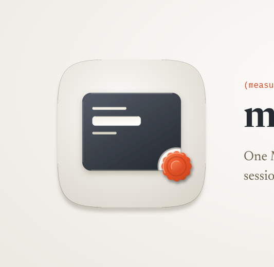

Every size a person actually meets this banner at, then the 12-point rubric. Delivery bar is 10 of 12 with checks 1, 2, 3, 7 and 12 non-negotiable. 5 of 5 mechanical checks pass and 7 still need a human verdict, which is what the renders above are for.

| # | Check | Verdict | Evidence |
|---|---|---|---|
| 1 | Exactly 3200x1040, from a 1600x520 layout at deviceScaleFactor 2 (non-negotiable) | pass | 3200x1040 |
| 2 | The plugin's real icon asset, referenced rather than redrawn (non-negotiable) | pass | 1 artwork reference inlined as a data URI, which is how a file:// render loads it at all |
| 3 | The wordmark is set in a linked web font, not a local system face (non-negotiable) | pass | loads IBM Plex Mono, Newsreader |
| 4 | Ground register agrees with the icon it sits beside | — | judged by eye on the renders above; fill this in |
| 5 | One warm accent, carried from the icon's own accent constant | — | judged by eye on the renders above; fill this in |
| 6 | Composition derived from the icon's build script, not eyeballed from a sibling | — | judged by eye on the renders above; fill this in |
| 7 | One essence line, no em dash (non-negotiable) | pass | no em dash in the copy |
| 8 | Nothing overflows the frame | — | judged by eye on the renders above; fill this in |
| 9 | Wordmark and essence line both legible at 900px | — | judged by eye on the renders above; fill this in |
| 10 | Wordmark legible at 400px | — | judged by eye on the renders above; fill this in |
| 11 | No element illegibly overlapping another | — | judged by eye on the renders above; fill this in |
| 12 | banner-src retained, so the banner stays editable (non-negotiable) | pass | banner-src.html |
5 / 12
Ships, and this is the second render of it. The banner was first taken on 19 Aug 2026, hours after take A2 was promoted to `icon-src.svg`; it was re-derived and re-rendered later the same day when the icon's seal moved out to straddle the plate's lower-right corner. Everything in the previous verdict that the move did not touch is repeated here rather than dropped, and every number the move did change is given with its before figure.
Composition derived from the new master and from nothing else. Every number in `banner-src.html` is read out of this plugin's own `build_icon.py` and scaled by one factor, K = 0.72: the plate box 172/232/680/536 r 60, the three mark boxes with their 68px inset from the plate's left edge, the seal now at 823/739 (it was 692/594) with r_out 112, r_in 95, 12 lobes, ring 66, boss 40 and a 132 countersink leaving the 20px collar, and the plate's own shadow of dy 18 against a 536 plate. The banner's ground is the icon's ground gradient restated: same centre at 42% / 34%, same three stops at 0, 0.62 and 1. The light axis is the glaze gradient's own (0.1, 0) to (0.88, 1), which is 45.3 degrees down-right, so the specular sits on the top-left arris and the porcelain fillet on the far bottom-right exactly as the master declares them. The tile's contact shadow is dy 9.67 and blur 11.82, which is the master's 18 and 22 taken as fractions of its 536 plate and re-applied to the 288px tile rather than borrowed from a sibling. `render_banner.py` records all of it under `derived` in its report, so row 6 is evidence rather than a claim in a comment.
The seal's move forced the one number here that was always a composition choice rather than a reading, and it is worth being plain about which. The field origin is now 1030, 44. It was 1128, 168, chosen so the page ran off the right edge and the bottom. The seal now sits ON the corner that crop discarded, so the first re-render at the old origin put a 72px stub of wax in the frame's bottom-right and nothing else of the seal in the frame at all. The field is now anchored so the sealed corner is whole and inside the frame, and the page stays open on the left where the mask carries it under the copy. One open edge is enough to say that this continues past the frame, and the corner carrying the signature move is the half worth showing.
Wordmark is Newsreader 600 at 70px, with IBM Plex Mono 450 carrying the two provenance marks. Both faces are already in the set and neither is a thirteenth: the pairing is the one `report` ships. Newsreader is this marketplace's document face, used by the three skills whose output is a written document somebody reads, and that is precisely what this skill produces: a persistent corpus with a ledger read first on every invocation, not a rendered surface. Choosing the house Instrument Sans would have filed it beside `mac-craft`, the generator, when this skill's own README says generation is somebody else's job. The mono has exactly one job here, which is to set `(measured)(canon)` in the corpus's own syntax, the same role `mac-craft` gives it.
The field is the same plate at reading size, carrying the master's own three inlaid marks and its own seal at their derived positions, with its notarised corner in the frame and its left side dissolved by the fade. Nothing in it is invented and nothing is added: the tile on the left is one entry seen as an icon, and the field is that same entry seen as a page. It is held at 0.52 so the tile stays the darkest mass in the frame, the master's plate reading L 0.046 against the field's composite, which measures a median of L 0.286 on this render where the mask is at full strength. The previous sheet quoted roughly 0.39 for that composite; the field sits over a different part of the ground gradient now, and this figure is measured rather than estimated.
Row 5, one warm accent. Held. The vermilion is spent on the seal and on the two provenance marks in the eyebrow, nowhere else, and both are the master's own ramp values. The seal rides its own 0.78 group rather than the field's 0.52, because inside the field group the wax composited to a pale salmon and a washed-out accent is the same defect as a second hue. The two seals now sit on a diagonal, the tile's at its lower right and the field's at its lower right, which reads as one object and its enlargement rather than as two marks.
Row 4, ground register. Agrees. Porcelain, and it is the icon's own porcelain rather than an approximation of it.
Row 8, overflow. Clean. `render_banner.py` asserts no text node's own box passes 1600, and the field's seal, which is the element nearest an edge, reaches x 1584.2 and y 494.5 against a 1600 by 520 frame.
Row 9, legibility at 900px, a GitHub README column. Wordmark and essence both hold comfortably. The mono eyebrow lands at 9px there and is readable rather than comfortable, which is the honest read. Unchanged by the move.
Row 10, legibility at 400px, the catalogue card. The wordmark holds. The essence is readable at a squint and the eyebrow is a grey and vermilion smudge, which is expected at 4px and is why the wordmark is the row that is checked. What the move changed at this size is the field: its seal is now a whole rosette seated in the plate's corner rather than a disc parked inside the plate, so the field reads as a sealed page at 400px where before it read as a card with a dot on it.
Row 11, overlap. Nothing overlaps, and the clearance was re-measured rather than carried over. The copy's rightmost ink is at x 1040.5, the essence's first line, with the wordmark at 1040 and the eyebrow at 998.5. The field's mask holds it at zero opacity until x 1088 and reaches full only at 1252, so the nearest painted field pixel is 47.5px clear of the copy. The field plate's left edge is now at 1030, which is nominally behind the copy's last 10px, and it paints nothing there: that is the mask doing its job rather than a collision. Before the move the field plate started at 1128 and the clearance read 83px.
Liabilities, recorded rather than closed, and one of the three is now closed. **Closed:** the field plate's left edge is no longer a visible boundary. At 1128 the edge was painted and read as a second object placed on the right; at 1030 the whole edge sits inside the mask's zero region, so the field genuinely dissolves leftward and there is no line to see. That was the first liability on the previous sheet and the re-anchoring closed it as a side effect rather than by design, which is worth recording as luck rather than craft. **Standing:** the field's seal is 2.56 times the diameter of the tile's, so the accent's visual weight sits on the right rather than on the tile. **Standing:** at 200px the wordmark survives as a shape whose letters are only just resolvable, which is true of every long name in this set and is not specific to this face; the essence is texture at that size and the eyebrow is a smudge.
What this banner carries forward from the icon's own sheet, updated. The seal move weakened the payment-card read that is rubric #11 on the icon, and the field shows why at reading size: a card has nothing hanging over its edge, and this page has a wax seal breaking its corner. It did not close the shelf collision. `shelf_check.py` puts `mac-design-digest` against `tui-craft` at 0.912 after the move, against 0.913 before it, and no seal position anywhere in the tile brings that pair under the 0.80 flag, because the number is dominated by the graphite plate's mass on porcelain and not by where the accent sits. That is the icon's problem and it is not one a banner can carry.
Rows 4, 5, 6, 8, 9, 10 and 11 are one person's assessment rather than a panel's.